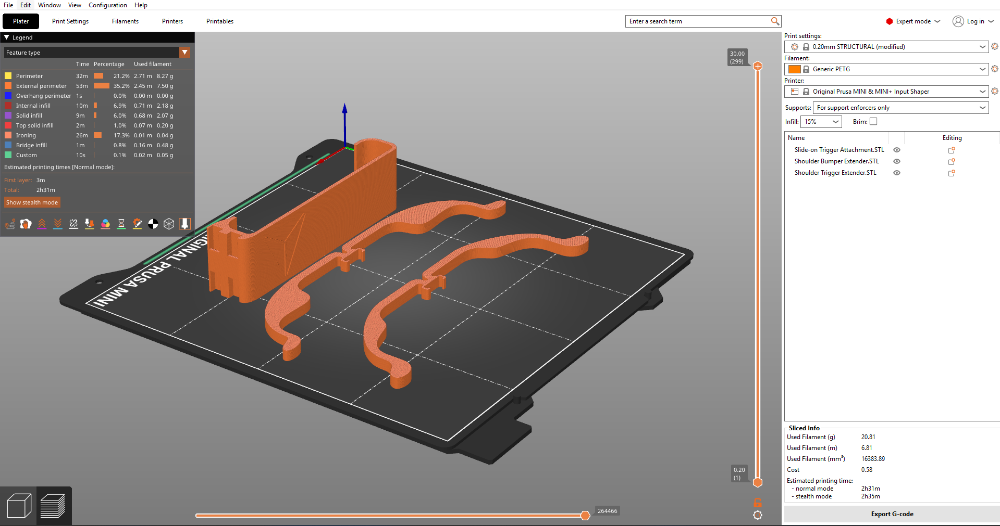
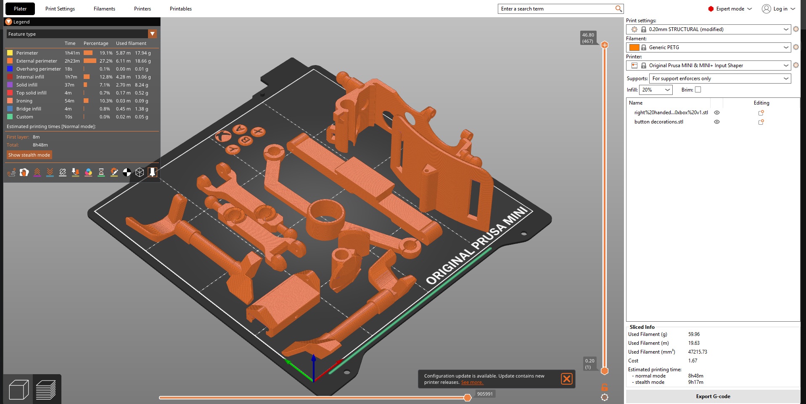
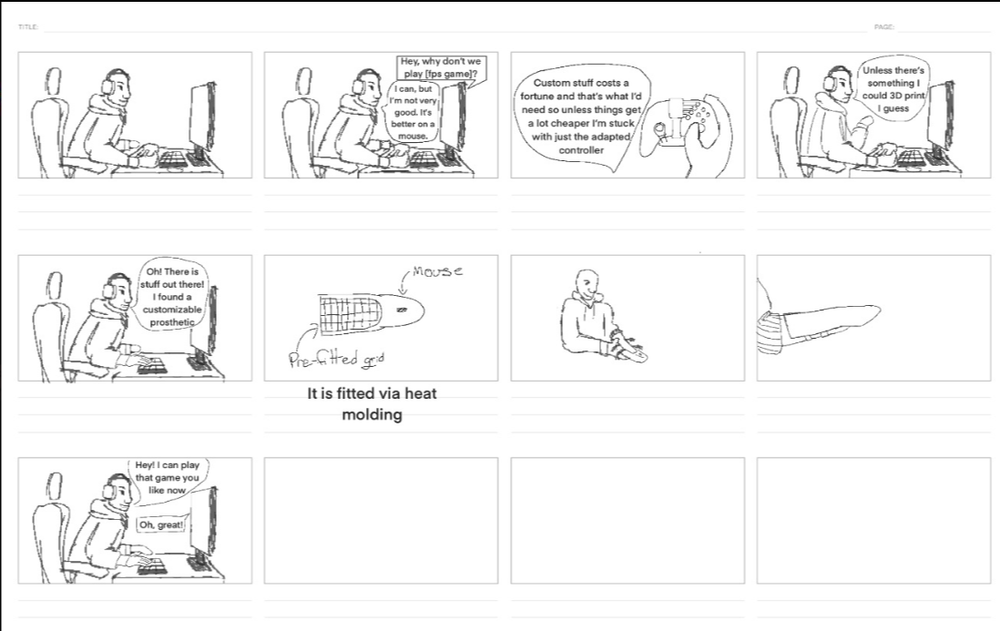

1. Research & Problem Framing
Problem Statement
"How can we make a cost-effective system to make quick, complex inputs possible for individuals with upper limb differences so that they can be competitive in first-person shooter games?"
Background Research
There are an estimated 33+ million gamers with disabilities in the US alone, many of whom face physical barriers to play.
Existing solutions for accessible gaming are widely varied and often hard to access due to very high price points. Additionally, many current market solutions focus primarily on larger buttons or easier-to-press switches. While helpful for some, this design philosophy inadvertently limits gamers with physical disabilities to slower-paced and simpler games.
Slower-paced games allow for simpler inputs, but more complicated, competitive games do not. For example, a fast-paced first-person shooter could require a competitive player to make up to 10 actions per second, or roughly 500 to 600 actions per minute (APM) (NBC News).
Ultimately, while an individual's brain may be able to make lightning-quick tactical decisions, they are entirely bottlenecked by poor physical accessibility in the hardware space.
Customer Profile: Duncan
Duncan is a junior in high school who loves everything about video games. After a long day of classes, he usually spends his evenings hanging out with his friends in Discord servers and playing competitive multiplayer matches online. However, as an individual with an upper limb difference, Duncan struggles to compete with his able-bodied friends in fast-paced, first-person shooter (FPS) games that require quick, complex controller inputs. You will typically find him seeking out custom keybinds, testing accessibility workarounds, or searching forums for modified gear that can help level the playing field.
Review of Existing Open-Source Solutions
To better understand the current landscape of accessible gaming hardware, our team researched and fabricated existing open-source solutions to test their physical mechanisms and key features.

Solution 1: Joy-Con Trigger & Bumper Extenders
Key Features & Mechanisms: This open-source design utilizes slide-on attachments and physical extensions for the shoulder buttons. By extending the physical reach of the triggers, it allows players to actuate the top buttons without needing a traditional grip on the controller.
Testing Notes: We fabricated these parts in PETG to test with existing Nintendo Switch Joy-Cons, allowing us to physically evaluate the ergonomics of extended trigger mechanisms.

Solution 2: Akaki Kuumeri One-Handed Xbox Mod
Key Features & Mechanisms: This highly complex, snap-on attachment utilizes a series of mechanical linkages to transfer button presses and thumbstick movements. By physically routing the left-sided inputs over to the right side (or utilizing a bottom-mounted friction shoe to move the secondary stick against a leg/surface), it allows a player to fully operate a standard two-handed controller with only one hand.
Testing Notes: We sliced this multi-part assembly for PETG to ensure the snap-fit joints and mechanical linkages had enough flexibility and durability to withstand high-action gaming inputs without snapping.
Design Thinking Methods Used
We used an Empathy Map to break down Duncan's experience into what he Says, Thinks, Does, and Feels. For example, we noted that he feels excluded and frustrated, and he does spend hours searching forums for custom keybinds. This exercise forced us to focus entirely on his emotional and practical needs rather than immediately discussing hardware solutions.
2. Problem Definition & Brainstorming
Thematic Analysis & Resulting Themes
After reviewing our background research and testing open-source hardware, our team grouped our findings and identified three core themes driving the problem:
Insight Statements
- Standard controllers rely heavily on traditional finger dexterity, creating a mechanical bottleneck for the high-action inputs required in competitive FPS games.
- The steep price points of current commercial solutions leave out the average teenage gamer, actively preventing users like our persona, Duncan, from playing with friends.
- Open-source 3D-printed mods are a great functional alternative, but relying purely on 3D printing isolates users who lack access to fabrication tools or maker spaces.
"How Might We" Statements
- How might we map complex, simultaneous FPS inputs in a way that bypasses the need for traditional dual-thumbstick and shoulder-trigger dexterity?
- How might we design a robust hardware solution that keeps the total cost to the user significantly below the $200 commercial standard?
- How might we build an assistive controller utilizing readily available, everyday parts so that the end-user does not need to own a 3D printer to assemble it?
Brainstorming & Ideation
To generate potential solutions, our team conducted a digital brainstorming session using Figma/FigJam. We organized our sticky notes into three distinct clusters: "Wild Ideas" to push our creative boundaries, "Hardware Hacks / No Printer Needed" , and "Modifying Existing Controllers" to leverage the readily available standard hardware.
Top Ideas & Final Selection
3. Proposed Solution & Storyboard
